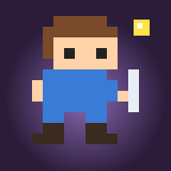
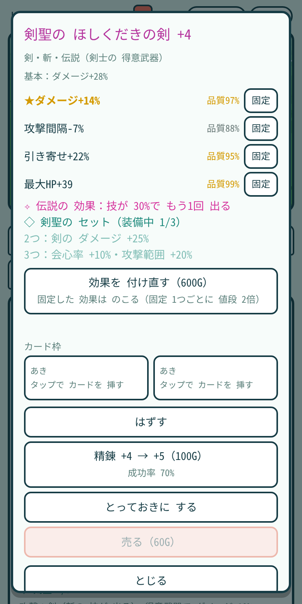
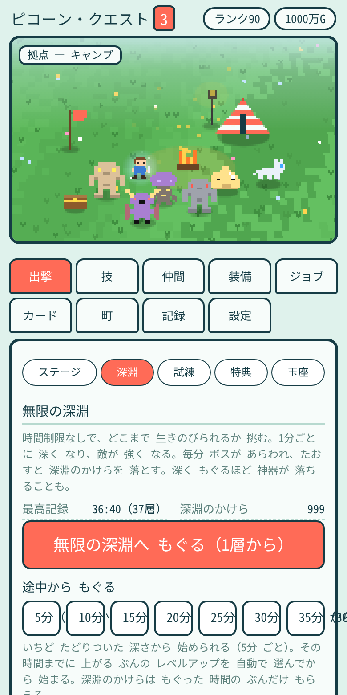

ヴァンサバ風
1プレイ 約2分・操作は 移動だけ
攻撃は 自動。敵の 群れの 中を 動きまわり、レベルアップの たびに 強化を えらんで、2分 生きのびると ボス戦。1回が 短いので、少しの 時間でも 1出撃 あそべます。
- 戦いの 中で 技を 「ピコーン！」と ひらめく
- 技が 続けて 出ると 連携に なる
- 倒した 敵が 仲間に なって いっしょに 戦う

押しよせる敵を 自動攻撃で なぎはらいながら、拾った装備を くらべて 鍛えて 強くなる。ハクスラ要素の 強い、ヴァンサバ風の ドット絵アクションです。
⏱ 1プレイ 約2分すきま時間に 1回ずつ
無料・ダウンロード不要。スマホの 縦画面向け（パソコンでも あそべます）。
攻撃は 自動。敵の 群れの 中を 動きまわり、レベルアップの たびに 強化を えらんで、2分 生きのびると ボス戦。1回が 短いので、少しの 時間でも 1出撃 あそべます。
強敵や ボスが 落とす 装備は、同じ 名前でも 中身が ちがいます。いい 1本を 探して、育てる ゲームです。
周回を 重ねた 先には、時間制限の ない「無限の深淵」が 待っています。

武器は 剣・刀・斧・槍・弓・ブーメラン・杖・竪琴など 13種。持つ 武器で 攻撃の 形と ひらめく 技が かわります。
装備の 効果は 拾うたびに 数値が ちがい、品質（％）で 当たり外れが 見えます。全部の 効果が 高い「完璧」や、性能 1.5倍の「輝く」装備は めったに 出ません。
伝説の 装備には「技が 30%で もう1回 出る」のような 動きの かわる 効果が つくことが あり、セット装備は 2つ・3つ そろえると 効果が 出ます。気に入った 効果を 固定して 残りを 引き直す「付け直し」も あります。
持てる 数は 進めるほど 増え、欲しい 効果を 登録しておくと 拾ったときに 知らせてくれます。

6つの ステージを 魔界まで 進むと 1周。周回を 重ねるほど 敵は 強くなり、周回ごとに 特典が ひらきます（どんな 特典かは ひらくまで ひみつ）。
周回を 進めると「無限の深淵」へ。ここだけは 2分の 区切りが なく、1分ごとに 層が 深くなり、毎分 ボスが あらわれます。どこまで 生きのびたかが 記録に なり、到達した 深さで さらに 特典が ひらきます。
深淵で 集めた かけらは 祭壇に ささげて、ずっと 残る 強化に。勇者ランクにも 上限は ありません。いちど たどりついた 深さからは 5分 きざみで 途中から もぐれます。
1回は 短くても、くり返すほど 先へ 進める 作りです。深淵の 奥を めざすと 数十時間 あそべます（あそび方で かわります）。
パソコンでは WASD か 矢印キーで 移動、Space で 必殺技、Esc で 一時停止。
かかりません。広告も ありません。
あそんでいる ブラウザに 自動で 保存されます。べつの 端末に うつすときは、設定の「書き出す」で 出た 文字を、うつしたい 端末の「読みこむ」に はりつけてください。
あそべます。ピコーン・クエスト2 は タップで 連撃する バトルRPGで、あそびの 形が ちがいます。
設定 → 動作・画面 の「演出の 重さ」を 軽量に するか、「30fpsで 動かす」を オンに してください。画面の ゆれや ヒットストップも ここで かえられます。
インストールも 登録も いりません。
▶ ブラウザで あそぶ